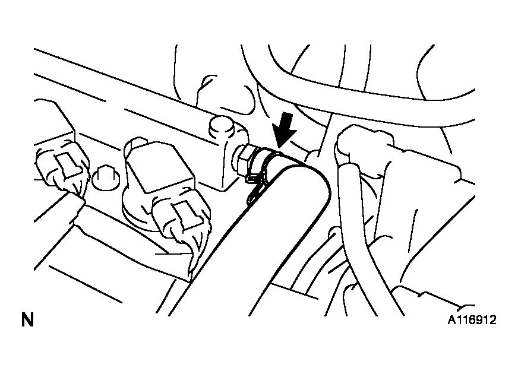

Ventilation Valve: Removal
REMOVE NO. 2 CYLINDER HEAD COVER (See
REMOVAL
)
DISCONNECT VENTILATION HOSE
Disconnect the ventilation hose from the ventilation valve.
Fig 1: Disconnecting Ventilation Hose From Ventilation Valve

Courtesy of © TOYOTA, LICENSE AGREEMENT TMS1002
REMOVE VENTILATION VALVE
Remove the ventilation valve.